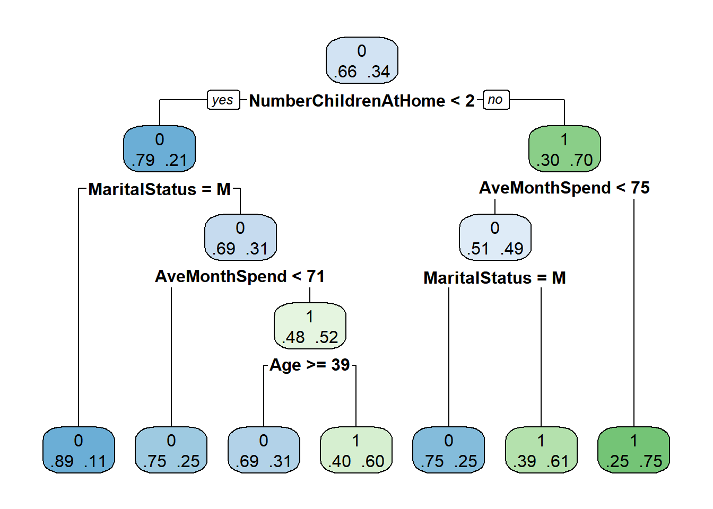
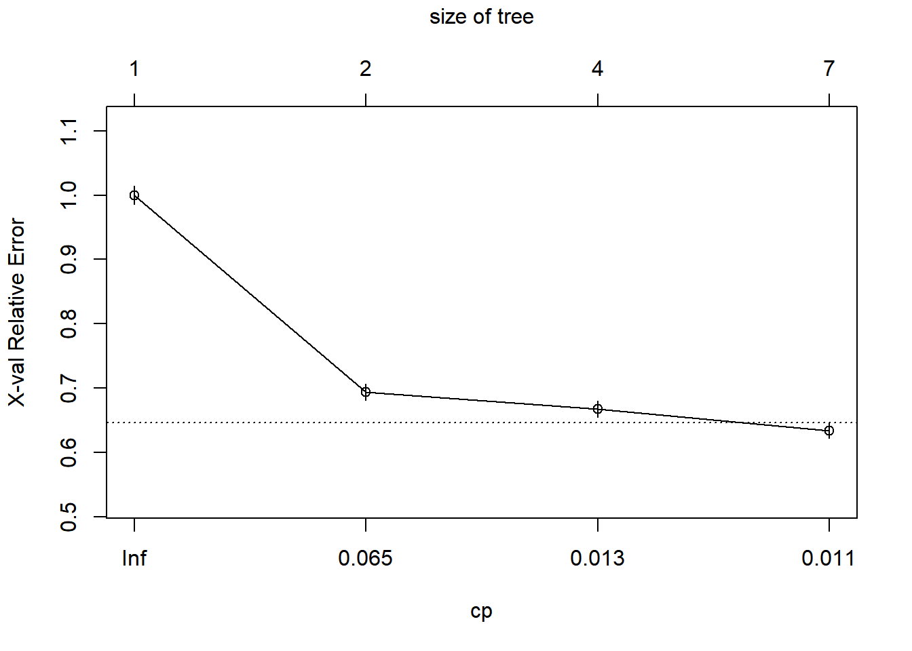

Now we will predict whether one client will buy a bike or not based on certain demographic features. The method we’ll use is called DECISION TREE. Decision tress are algorithms of supervised classification, which seek to predict a specific dependent variable (BikeBuyer in this case). Both independent and depedendent variables can be either qualitative or quantitive. If the dependent variable is numerical, we call it “Regression Tree”; but in our case, where the variable is categorical (even if we represent it with O and 1), then we call it CLASSIFICATION TREE. And the end, we’ll compare it to the logistic regression model, which is used to predict binary variables too.
Here the new ones are the rpart and rpart.plot libraries used for the creationg of the classification model and graphing the decision tree respectively.
library(readr) #to read in the csv
library(dbplyr) #for data wrangling
library(tidyverse) #for data wrangling, for example the function "select"
library(rpart) #decision tree algorithm
library(rpart.plot) #graph the decision treeThe data wrangling part we can see it in the other sections (Regression or Exploratory Data Analysis). The only exception is that we added the column of Bike Buyer(which has 1 if the customer bought a bike, or a 0 if they didn’t) to the data_qualitative subset. That’s the most important column for this part of the analysis.
customer <- read_csv("~/CS 499 Senior Project/datasets/AdvWorksCusts.csv")
spend <- read_csv("~/CS 499 Senior Project/datasets/AW_AveMonthSpend.csv")
bikebuyer <- read_csv("~/CS 499 Senior Project/datasets/AW_BikeBuyer.csv")
three_datasets <- data.frame(customer, spend, bikebuyer)
data_clean <- select(three_datasets,-c(CustomerID.1, CustomerID.2))
missing_values <- sapply(data_clean, function(x) sum(is.na(x))) #it checks number of missing values by column
data_clean <- select(three_datasets,-c(CustomerID.1, CustomerID.2, Title, MiddleName, Suffix, AddressLine2))
data_clean <- data_clean[!duplicated(data_clean), ] #it removes duplicates
###Let's add up age column using the existing DOB column
#Change BirthDate from Character to Date format
data_clean$BirthDate <- as.Date(data_clean$BirthDate, format = "%m/%d/%Y")
#Append the new column called Age
data_clean$Age <- as.numeric(difftime("1998-01-01",data_clean$BirthDate, units = "weeks"))/52.25
data_qualitative <- data_clean %>% select(11:16,21)
data_quantitative <- data_clean %>% select(c(22,17:20))
features <- cbind(data_quantitative,data_qualitative)
#plot(data_quantitative)We’ll have to select some features, the ones that correlate the most with the dependent variable. I think it’s easier if we do that separating the independent variables between categorical and numerical. When you plot numerical variables, we can see some correlation with age and average month spent, so we’ll keep those, and get rid of the rest. As for the qualitative variables, we could do some visualizations or Chi Squared test, and explore the possible correlations. For now, let’s just use all possible explanatory variables and then “prune” our decision tree.
We’ll divide our dataset this way: 60% train and 40% test. In the first line, we just create an index that we’ll assign 1’s and 2’s to each row, with aprobabibloty of 60/40 %, which in turns gives a vector that we’ll use as “dictionary” to tell which rows will be train and which will be test.
ind <- sample(2, nrow(features), replace = TRUE, prob = c(0.6,0.4)) #60% training, 40% test
trainData <- features[ind == 1, ] #training
testData <- features[ind == 2, ] # test We input the dependent variable, and we’ll explain it with a rest of the the variables which is why we leave the space after the Bike buyer, in blank. here “method” indicated that our variable to be predicted is categorical
tree <- rpart(BikeBuyer ~ ., method = 'class', data = trainData)print(tree)## n= 9783
##
## node), split, n, loss, yval, (yprob)
## * denotes terminal node
##
## 1) root 9783 3291 0 (0.6636001 0.3363999)
## 2) NumberChildrenAtHome< 1.5 7185 1474 0 (0.7948504 0.2051496) *
## 3) NumberChildrenAtHome>=1.5 2598 781 1 (0.3006159 0.6993841)
## 6) AveMonthSpend< 83.5 812 374 1 (0.4605911 0.5394089)
## 12) MaritalStatus=M 322 110 0 (0.6583851 0.3416149) *
## 13) MaritalStatus=S 490 162 1 (0.3306122 0.6693878) *
## 7) AveMonthSpend>=83.5 1786 407 1 (0.2278835 0.7721165) *rpart.plot(tree, extra = 4) # extra = 4: probability of observations by class
printcp(tree) # stats of results##
## Classification tree:
## rpart(formula = BikeBuyer ~ ., data = trainData, method = "class")
##
## Variables actually used in tree construction:
## [1] AveMonthSpend MaritalStatus NumberChildrenAtHome
##
## Root node error: 3291/9783 = 0.3364
##
## n= 9783
##
## CP nsplit rel error xerror xstd
## 1 0.314798 0 1.00000 1.00000 0.014200
## 2 0.015497 1 0.68520 0.68520 0.012658
## 3 0.010000 3 0.65421 0.65968 0.012489plotcp(tree) # evolution of error as the number of nodes increases
Here we see that N is the number of observations, 9,808. In the first line, we see that most observations/clients (66.8%) DIDN’T buy a bike (BikeBuyer = 0), and so on. For the company, it’s interesting to see that the person that will likely buy a bike the most is someone who is married, with more than 2 children at home.
pruneTree <- prune(tree, cp = 0.01000) #Using the lowest CP from the printcp(tree) command above
printcp(pruneTree)##
## Classification tree:
## rpart(formula = BikeBuyer ~ ., data = trainData, method = "class")
##
## Variables actually used in tree construction:
## [1] AveMonthSpend MaritalStatus NumberChildrenAtHome
##
## Root node error: 3291/9783 = 0.3364
##
## n= 9783
##
## CP nsplit rel error xerror xstd
## 1 0.314798 0 1.00000 1.00000 0.014200
## 2 0.015497 1 0.68520 0.68520 0.012658
## 3 0.010000 3 0.65421 0.65968 0.012489As you can see, printcp(pruneTree) and Tree is the same thus showing that the first command had already pruned (or didn’t) where it had to.
#We validate the ability of prediction of our prediction tree usin the test dataset
testTree <- predict(tree, newdata = testData, type = 'class')
#let's visualize the results with a matrix of confusion
table(testTree, testData$BikeBuyer)##
## testTree 0 1
## 0 4071 1057
## 1 401 1109There we saw that our model predicted 4,024 people who were not buyers correctly, and 1051 who were did buy but we classifed them as not. Same, with the other row.
## Let's calculate the % of correct answers
sum(testTree == testData$BikeBuyer) / length(testData$BikeBuyer)*100## [1] 78.03555it shows that we have 78.91% of accurate predictions!